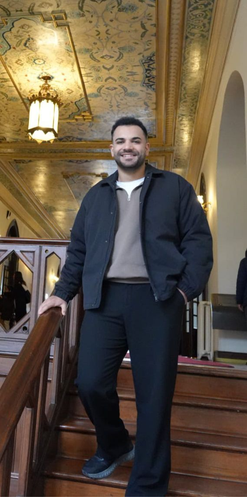

İnönü Üniversitesi'nde Siyaset Bilimi ve Uluslararası İlişkiler eğitimimi sürdürürken, eş zamanlı olarak Anadolu Üniversitesi'nde Web Tasarımı ve Kodlama alanında akademik ve pratik birikim edinmekteyim. Amacım, küresel meseleleri analiz etme becerimi, teknolojinin sunduğu somut çözüm yöntemleriyle disiplinli bir şekilde bütünleştirmektir. Analitik bakış açısını teknik üretim becerisiyle birleştiren, disiplinler arası bir çalışma anlayışına sahibim.